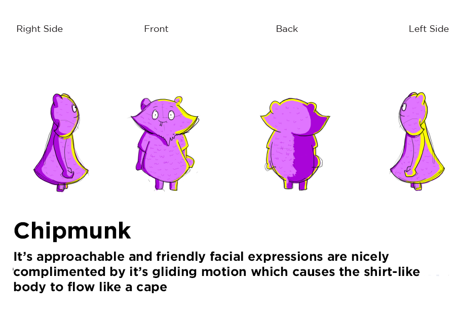
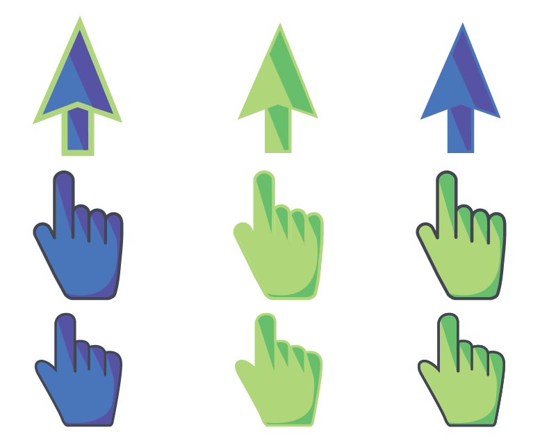
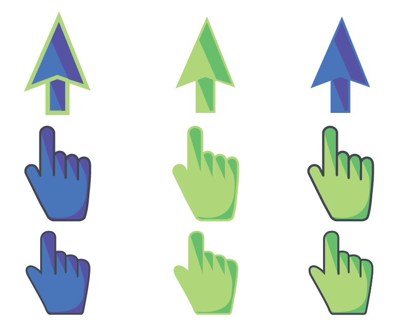

RETURN TO SITE
Boston Children's Hospital
Interactive Design Internship
The Digital Media and Design Department at UConn created a 20 foot interactive wall at BCH. This wall stands in the middle of the lobby in front of an open area surrounded by Microsoft Kinects. The motion of passerbys is captured and triggers anything from animations on screen to the person taking on a character themselves. I worked on the BCH project for two full years until the end of our contract with the hospital. This was one of the most rewarding things I have ever done and proved to me that art can make the biggest difference.
Monsters Scene
The Monster's Scene took almost a full year to complete from ideation to execution. There were so many moving parts and challenges. We had to invent, draw, model, rig and animate the characters each with their own personality. The aim of this game was to have children and guest walk by the wall and have their motion trigger the opening of doors. Each character had a 'peek' animation as well as a 'pop' animation played when the user remained in the same spot.
A sample of a character breakdown sheet
Breakdown sheets created by project manager Hunter French

An inital model
Twiggy (left) was modeled by team member Jared Fishler

Rigged and Animated
Both characters were rigged and animated by me


In practice
Birds Scene
The birds scene featured birds from around the world sitting on telephone wire. As people walked by the birds they walked over would play an animation and chirp. Each bird had an idle that would play every so often and an action.
My Birds

In practice
Matching Game
The Matching Game was a simple concept that encouraged teamwork and communication. When one user highlighted a card and flipped it over another person would flip card until they found the match. I created all of the iconography.
Icons
 

In practice